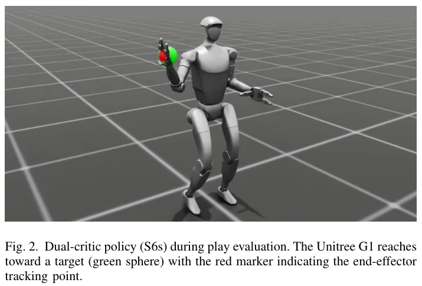

⚡速记层 · 思想 / 逻辑 / 方法
默认读完就走的一层——只讲思想、逻辑、方法；效果只作验证。要核对原文再进下面的「深读层」。
Loco-manipulation 要在一个策略里同时管「走稳」和「够准」两个目标。RL 训这种多目标策略时，critic（价值网络）有两种接法：一个统一 critic 估两目标合并后的价值，或两个 critic 各估各的。绝大多数人形 RL 论文（HOVER、ULC 等）默认选一种、从不对照。本文专门把这个被忽视的旋钮单拎出来测。
- 控制变量：同一 G1、同一 13 级 curriculum、同一 PPO 超参，只换 critic 架构（统一 109-dim vs 双分离）。
- 训练时两者"看起来一样"：reward 值、curriculum 进度、reach 计数都接近——标准训练指标分不出高下。
- 换标准化评测（time-to-reach、throughput、validated reach）才暴露差距：dual 到达快 3.5×、吞吐 2×。
- 机制证据：unified 下 arm 动作幅度只有 1.22（dual 是 2.54/3.04）——合并价值被 locomotion 主导、压制了 arm 出手。
- 推论：在 IL+RL 混合流程里，unified critic 的 locomotion 梯度会覆盖 IL 学到的 arm 行为；dual critic 隔离梯度、保住技能。
G1 本体+arm 观测 → 两支独立 PPO（πloco/Vloco · πarm/Varm）→ disjoint reward（loco: 速度跟踪+能量 · arm: 够取距离+位移）→ 12 腿关节 + 5 臂关节动作；Stage 7 冻结 loco、只新训 arm
- ① 双 critic 分离奖励：两个价值函数各看各的 reward、互不混合；对照组是把两路观测拼成 109-dim 喂一个 unified critic 估合并价值。
- ② 分支独立 + frozen-branch transfer：Stage 7 冻结已学好的 locomotion 分支，arm 策略重新初始化训练。
- ③ 13 级 sequential curriculum：站立够取 → 行走够取 → 固定朝向 → 可变朝向 cone（20°–80°），用 validated reach rate 作晋级门槛。

仅换 critic 架构（不动 reward），dual 在站立评测全面碾压 unified；arm 动作幅度翻倍是机制证据。
| 指标（站立） | Unified S6u | Dual S6s | 📍 |
|---|---|---|---|
| Validated reach rate | 53.8% | 65.2% | p.3 · Tab.II |
| Time-to-reach | 22.6 步 | 6.5 步 | p.3 · Tab.II |
| Validated / 1K steps | 7.0 | 14.3 | p.3 · Tab.II |
| Arm action magnitude | 1.22 | 2.54 | p.3 · Tab.II |
- 同问题不同切口：WholeBodyVLA（LMO） 给 loco-manip 定制了离散指令 RL 控制器 + 两阶段 curriculum；本文聚焦同一单策略里更底层的 critic 架构选择。
- 直接对话：π*0.6 用 RL 从经验微调 IL/VLA 策略；本文论证 dual critic 能在这种 IL+RL 流程里隔离梯度、防止遗忘 manipulation 技能。
- 同硬件同范式：GRAIL 也是 G1 上 motion-tracking RL loco-manip，可对照其 critic/reward 设计。
- IL+RL 微调对象：Ψ0 这类用 IL 预训练、再用 RL 精修的人形 loco-manip 基座，正是本文 dual-critic"隔离梯度防遗忘"假说的适用场景。
Track B（足式/whole-body RL）正中命中：单策略同时走+操作的控制器设计；可直接抄的工程配方 = dual actor-critic + disjoint reward + frozen-branch transfer，以及"先定架构、再调 reward"的优先级判断。对你做 RL 微调 IL/teleop 策略尤其有用——dual critic 把 locomotion 梯度隔离在另一支，理论上能防止 arm 技能被 catastrophic forgetting。落地门槛：仅 sim、单 seed、5-DoF arm、且存在混淆变量（见局限7），结论是方向性而非定量定论，需自己复现。Track A（移动操作 VLA）弱相关：无 vision-language，仅在 IL+RL 议题上有交集。
◆核心观点 · 证据
每条 = 分型论点（常驻）+ 解读（常驻）+ 折叠的逐字原文/译文（📍真实页码，Ctrl-F 锚点）。7 观点 · 9 证据。
问题与方法
critic 架构是被忽视的旋钮
多目标人形 RL 里"统一 vs 分离 critic"几乎没人比较——大家默认选一种就发论文，没人把它当变量测过。
📍 p.1 · §I Introduction — 查逐字证据
This choice is rarely discussed in the humanoid RL literature, where most works adopt one architecture without comparing alternatives.
Dual Actor-Critic + 冻结分支迁移
把系统拆成完全独立的两支：locomotion（πloco/Vloco）和 arm（πarm/Varm），两个 critic 拿互不混合的 reward；Stage 7 冻结 loco、只新训 arm。
📍 p.2 · §III.A System Overview — 查逐字证据
The revised design (Fig. 1) separates the system into fully independent branches. ... The two critics receive disjoint reward signals: locomotion critic on velocity tracking and balance, arm critic on reaching distance and displacement only.
📍 p.2 · §III.C Anti-Gaming — 查逐字证据
This variant uses the dual-critic architecture with a frozen locomotion branch and freshly initialized arm policy.
结果与边界
dual 到达快 3.5×、吞吐 2×
仅换 critic 架构，dual 平均 6.5 步到达（unified 22.6 步），validated reach/1K 达 14.3（unified 7.0），站立 validated reach 65.2% vs 53.8%。
| 指标 | S6u 统一 | S6s 双 | S7 双+AG | 📍 |
|---|---|---|---|---|
| Curriculum level | 10/12 | 12/12 | 7/7 | Tab.II |
| Validated reach（站） | 53.8% | 65.2% | 60.9% | p.3 |
| Time-to-reach（站） | 22.6 | 6.5 | 5.8 | p.3 |
| Validated / 1K（站） | 7.0 | 14.3 | 13.0 | p.3 |
| Timeout（站） | 41.0% | 27.3% | 28.1% | p.3 |
| Validated reach（走） | 51.1% | 63.1% | 56.2% | p.3 |
📍 p.3 · §IV.B Results — 查逐字证据
the unified-critic policy requires 22.6 simulation steps (0.45s) to reach a target on average, while the dual-critic policy requires only 6.5 steps (0.13s)—a 3.5× improvement. This directly translates to throughput: dual critics achieve 14.3 validated reaches per 1,000 steps compared to 7.0 for the unified critic, a 2× improvement.

机制：unified 压制 arm 动作幅度
unified 下 arm 动作幅度均值仅 1.22，约为 dual（2.54/3.04）的一半——合并价值被 locomotion 主导，arm "出手没底气"，导致收敛慢、超时多。
📍 p.3 · §IV.B Results — 查逐字证据
the unified critic produces actions with mean magnitude 1.22, roughly half that of the dual critics (2.54 and 3.04). This suggests the unified critic’s value landscape partially suppresses arm actions—the arm moves, but with less commitment, resulting in slower convergence to targets and more timeouts.
reward 工程不及架构；训练指标会骗人
在 dual 上再叠 5 个 anti-gaming 奖励无额外增益（60.9% vs 65.2%）；而 reward/curriculum/reach 计数这些标准训练指标完全看不出 3.5× 的差距。
📍 p.3 · §IV.C Discussion — 查逐字证据
The dual-critic policy without anti-gaming mechanisms (S6s, 65.2%) slightly outperforms the variant with five anti-gaming mechanisms (S7, 60.9%). ... once the architectural bottleneck is resolved, additional reward engineering for anti-gaming is unnecessary.
📍 p.3 · §IV.C Discussion — 查逐字证据
The 3.5× speed difference and 2× throughput gap are invisible to these standard metrics and only emerge through standardized evaluation with time-to-reach and throughput measurements.
对 IL+RL 微调的启示（防遗忘）
在"先 IL 学 manipulation、再 RL 微调"的混合流程里，unified critic 的 locomotion 梯度会覆盖 IL 学到的 arm 行为；dual critic 把 RL 信号隔离到对应分支，保住已学技能。
📍 p.4 · §IV.C(4) Discussion — 查逐字证据
A dual-critic architecture naturally isolates the RL fine-tuning signal to the relevant branch, preserving the imitation-learned behavior in other branches. This architectural choice may be critical for preventing catastrophic forgetting of IL-acquired skills during RL refinement.
📍 p.1 · Abstract — 查逐字证据
when refining a pre-trained manipulation policy with RL, a unified critic risks suppressing the learned behavior through competing locomotion gradients.
混淆变量 + 仅 sim、单 seed
S6u 与 S6s 同时差在 critic 架构和 arm 动作维度（12 vs 5 DoF），作者承认这是混淆；加上仅仿真、单 seed、5-DoF arm，结论是方向性而非严格因果。
📍 p.4 · §IV.C Confounding factors — 查逐字证据
We note that S6u and S6s differ in arm action dimensionality (12 vs 5 DoF) and critic architecture ... Nevertheless, the 5-DoF arm is a strict subset of the 12-DoF action space, making the critic architecture the most likely explanatory variable.
⎘开源状态 · 实时核查（截至 2026-06-16）
- 代码
- 未发布 arXiv 全文及页面均无 GitHub / repo 链接
- 权重
- 未发布 无 checkpoint / 模型发布
- 项目页
- 无 未检索到任何 project page
- 论文
- 可读 arXiv:2606.11891v1（10 Jun 2026）· 收录于 ICRA 2026 RL4IL Workshop
核查方式：WebSearch 论文标题/作者 + WebFetch arXiv abstract 页（2026-06-16）。单作者短文，正文与致谢均无开源声明；致谢仅注明用 AI 助手（Claude）辅助润色文稿。若后续放出代码会更新。
⚖批判 · 评级
把一个被默认掉的设计旋钮（critic 架构）单拎出来对照，给出"分离 critic 防止目标互相压制"的可测机制（arm 动作幅度 1.22 vs 2.54）；并提出"dual critic 可作 IL+RL 微调的防遗忘机制"这一对 Track B 有用的工程假说。结论清晰、可直接试。
核心对照存在混淆（S6u/S6s 同时差 critic 架构与 arm DoF 12 vs 5，见局限7）；仅 sim、单 seed、无方差、自建基准、单环境评测；IL+RL 的"防遗忘"只是类比、未实测；未开源、非正式同行评审（workshop 短文）。
评级：Incremental 命题有价值、对 Track B 有启发，但证据强度弱（混淆 + 单 seed + sim-only），是一个有想法的初步观察而非定论。建议当"假说来源"而非"已验证结论"读。